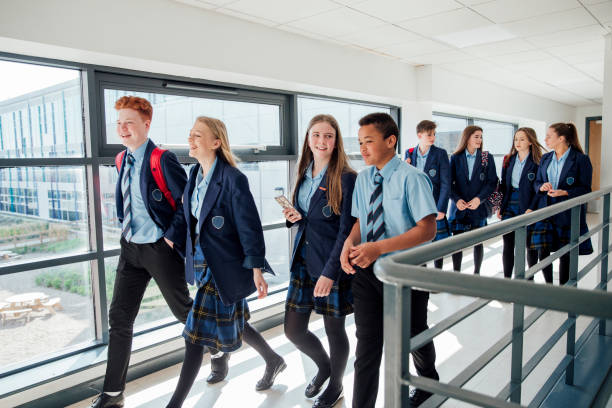

Above All School

Welcome to AA School
We offer
Nursery Education
Our accredited Calvert Program is proven,time-tested, and well renownedas the finest curriculum available today. We prepare our pupils for primary school education. for the past ten years, we have had 100% pass rate at national nursery school exams. we take pride for having hiqhly qualified staff.
Junior Secondary Education

A young student’s educational development during middle school years prepares them for the many academic challenges they will soon face in high school and in college. This crucial time could make all the difference when it comes to future achievements. AA’s Middle School instill in children the vital skills and knowledeg needs to be sucess in High schools.for the past ten years, we have had 100% pass rate at national middle school exams.
High School Education
We offer courses in Science, Commercial and Arts. Much emphasis is laid on praticals for all departments. The school has different labs; Physics, Biology, Chemistry and Computer Science for the past ten years, we have had 100% pass rate at national nursery school exams. we take pride for having hiqhly qualified staff.